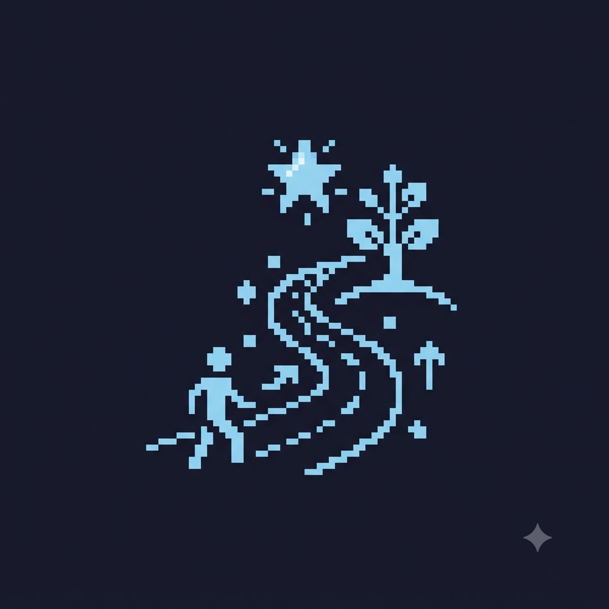

Bem-Vindos ao minha
Por:Gabriely
Fala, galera! Sejam muito bem-vindos ao blog da gaby
Fala minha gente! Sejam muito bem-vindos a minha vida. Todos me chamam de gaby, e criei o minha vida — com esse estilo azul — para ser o nosso ponto de encontro oficial para falar sobre minha vida e acontecimento sobre mim sobre meu dai a dia e minha rotina na escola ��✨